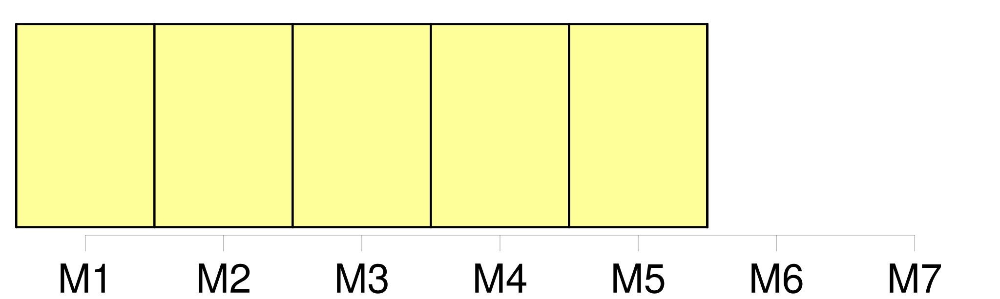
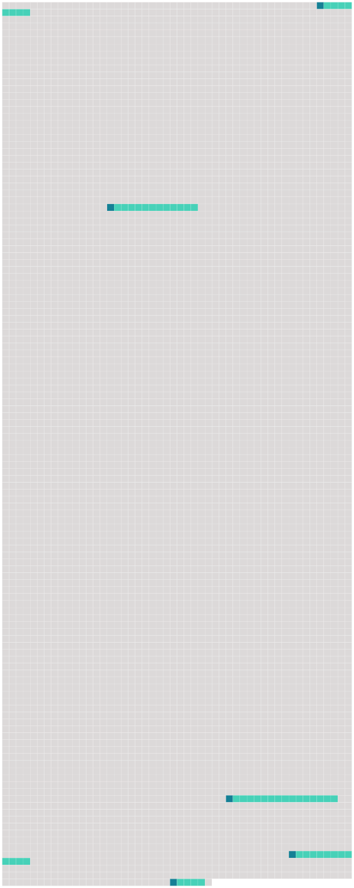

Longueur nb maillons : 5 mentions |
  |
Lorsque l'état des stocks de poissons visés ou des espèces non visées, ou des espèces associées ou dépendantes devient préoccupant, les membres de la Commission renforcent la surveillance qu'ils exercent sur ces stocks et espèces afin d'évaluer leur état et [l'efficacité des mesures de conservation et de gestion] [17 phrases]
Lorsque la Commission adopte des mesures conformément à l'approche de précaution en l'absence d'informations scientifiques appropriées, ainsi que prévu à l'article IV, paragraphe 2, de la présente convention, la Commission s'efforce d'obtenir dans les meilleurs délais les informations scientifiques nécessaires au maintien ou à la modification de ces mesures ; [121 phrases] Chaque partie, lorsqu'elle a des motifs raisonnables de croire qu'un navire battant pavillon d'un autre État se livre à une activité qui compromet [l'efficacité des mesures de conservation et de gestion adoptées pour la zone de la convention] , attire sur ce point l'attention de l'État du pavillon concerné et peut, le cas échéant, attirer l'attention de la Commission sur ce point. [9 phrases]
Si la Commission détermine que des navires pêchant dans la zone de la convention ont exercé des activités qui compromettent [l'efficacité des mesures de conservation et de gestion adoptées par la Commission] ou qui les enfreignent d'une autre manière, les parties peuvent engager une action, en accord avec les recommandations adoptées par la Commission et conformément à la présente convention et au droit international, pour dissuader ces navires d'exercer de telles activités jusqu'à ce que l'État du pavillon ait pris les mesures appropriées pour s'assurer que ces navires ne poursuivront pas ces activités. [2 phrases]
Chaque partie, conformément au droit international, prend les mesures nécessaires pour garantir que les navires battant son pavillon respectent les dispositions de la présente convention ainsi que les mesures de conservation et de gestion adoptées en vertu de celle -ci, et qu'ils ne se livrent à aucune activité compromettant [l'efficacité de ces mesures] |
 |
La ressource peut être téléchargée sur la page Ortolang
Si vous avez des questions ou vous voyez des erreurs, merci d'envoyer un mail à silvia.federzoni89@gmail.com
Site développé par S. Federzoni (contact)